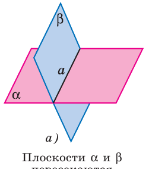
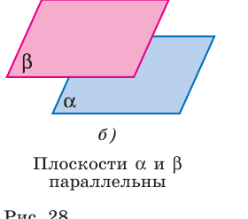
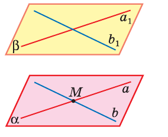
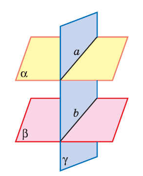
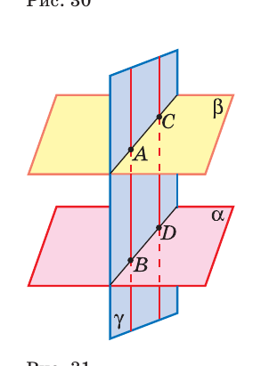

Теория
Два случая — и всё
По аксиоме А3, если у двух плоскостей есть общая точка, то у них есть целая общая прямая. Значит, вариантов ровно два: плоскости пересекаются по прямой — или не имеют общих точек вообще. Третьего не дано.


Две плоскости называются параллельными, если они не пересекаются. Обозначение: α ∥ β.
Признак параллельности плоскостей
Проверить определение напрямую невозможно: плоскости бесконечны, «посмотреть везде» нельзя. Нужен критерий, который проверяется локально.
Если две пересекающиеся прямые одной плоскости соответственно параллельны двум прямым другой плоскости, то эти плоскости параллельны.

Пусть в плоскости α прямые a и b пересекаются в точке M, а в плоскости β лежат a₁ ∥ a и b₁ ∥ b.
Шаг 1. По признаку параллельности прямой и плоскости (урок 2): a ∥ β и b ∥ β.
Шаг 2 (от противного). Пусть α и β не параллельны — тогда они пересекаются по прямой c.
Плоскость α проходит через прямую a, параллельную β, и пересекает β по прямой c. По свойству 1° из урока 2 получаем a ∥ c. Точно так же b ∥ c.
Выходит, через одну точку M проходят две разные прямые a и b, параллельные одной и той же прямой c. Это запрещает теорема о параллельных прямых. Противоречие, значит, α ∥ β. ∎
Два свойства параллельных плоскостей
Если две параллельные плоскости пересечены третьей, то линии их пересечения параллельны.

Прямые a и b лежат в одной плоскости γ. Пересечься они не могут: общая точка принадлежала бы и α, и β, а эти плоскости параллельны. Лежат в одной плоскости и не пересекаются ⟹ параллельны. ∎
Отрезки параллельных прямых, заключённые между параллельными плоскостями, равны.

Проведём плоскость γ через параллельные прямые AB и CD. Она пересекает α и β по прямым AC и BD, которые по свойству 1° параллельны. В четырёхугольнике ABDC обе пары противоположных сторон параллельны ⟹ это параллелограмм ⟹ AB = CD. ∎
GeoGebra
Опыт 1. Признак параллельности плоскостей
- M=(0,0,0)
точка пересечения прямых в первой плоскости - a=Line(M,(4,1,0))
прямая a - b=Line(M,(1,4,0))
прямая b - al=Plane(a,b)
плоскость α - N=(1,1,3)
точка во второй плоскости - a1=Line(N,N+Vector(M,(4,1,0)))
прямая a₁ ∥ a - b1=Line(N,N+Vector(M,(1,4,0)))
прямая b₁ ∥ b - be=Plane(a1,b1)
плоскость β — параллельна α - Intersect(al,be)
пусто: общей прямой нет
Теперь поверните b₁ так, чтобы она перестала быть параллельной b — и Intersect сразу выдаст прямую пересечения. Признак перестал выполняться — параллельность исчезла.
Опыт 2. Свойство 1° — параллельные следы
- al=Plane((0,0,0),(6,0,0),(0,6,0))
плоскость α (пол) - be=Plane((0,0,4),(6,0,4),(0,6,4))
плоскость β (потолок) — параллельна α - ga=Plane((0,1,0),(5,4,0),(0,1,5))
наклонная плоскость γ (стена) - p=Intersect(al,ga)
первая линия пересечения - q=Intersect(be,ga)
вторая линия - Angle(p,q)
выдаст 0° — линии параллельны
Опыт 3. Свойство 2° — равные отрезки
- A=(1,1,0)
- B=(1,1,4)
отрезок AB между плоскостями - C=(4,2,0)
- D=(4,2,4)
отрезок CD, параллельный AB - Distance(A,B)==Distance(C,D)
true — отрезки равны
Задачи урока
Задачи № 48–65 из учебника Атанасяна. Решай с обоснованием: на каждый шаг — ссылка на аксиому, теорему или признак.
Тест к уроку
Домашнее задание
№ 52, 54, 60, 63 письменно. Устно: сформулировать признак параллельности плоскостей и объяснить, почему нельзя заменить «пересекающиеся» на «параллельные»; разобрать № 62 своими словами.